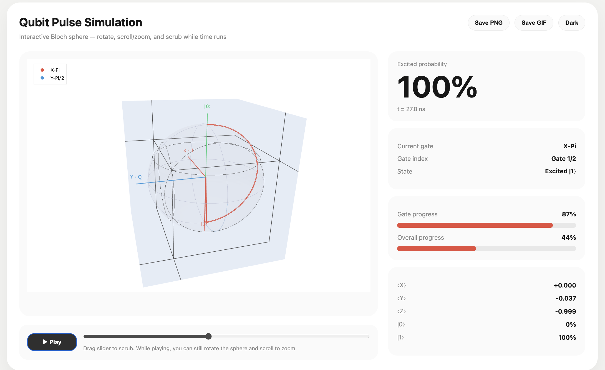
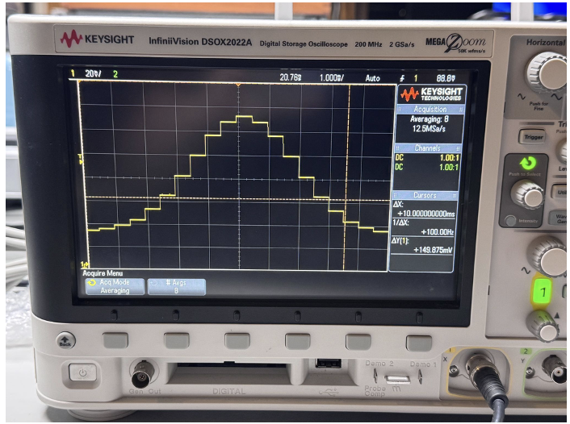
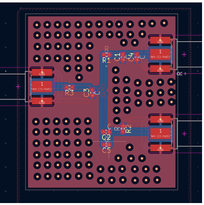

Cryo-CMOS QuASI Validation
Ongoing project
Overview
Comparing QuASI simulations against Cadence circuit simulations (TSMC process) to validate a custom cryo-CMOS chip. Our lab previously reached gate error within 0.0014% after calibration; now re-checking that against a broader set of hardware and Cadence data. Generating real test signals with an AWG and mixer to recreate qubit drive pulses on hardware, and comparing chip measurements against Cadence and QuASI predictions.
Compared AWG520-generated hardware pulses against QuASI's simulated predictions (with injected noise) to see how well simulation tracked real measurements. Implemented smoothing plus high-pass/low-pass filtering to simulate SSB modulation as an alternative to DRAG, and now use Cadence to simulate both independently for a side-by-side comparison. Wrote Python tooling to sweep pulse parameters, compare configurations, and process/plot results from CSV data. The 0.0014% figure is being re-verified; if it doesn't hold, next steps include refining calibration, widening the noise sweep, and cross-checking SSB vs. DRAG under matched conditions.
Animation & Visualization

Built a Python visualization layer on QuASI that renders directly from the accumulated ⟨X⟩⟨Y⟩⟨Z⟩ gate history: an interactive Bloch sphere with a live slider and readout, a scrubbable player, a headless GIF export, a shareable Plotly HTML export (rotatable/zoomable during playback), and a one-call PowerPoint asset bundle. Ghost trails are drawn once at low opacity so only the active vector needs updating each frame, keeping playback smooth.
PCB & DAC Testing


Used an AWG520 to generate DAC output for Python-synthesized pulses and captured the waveforms on an oscilloscope to verify timing and shape. Designed a PCB for the SSB filtering circuit (smoothing plus high-pass/low-pass stages) used to compare SSB against DRAG on real hardware.
← Back to research